Generated: 2026-06-13T21:35:27.750Z
Status: pass
Exercises inventoried: 39
Exercise priority counts: P0: 0, P1: 0, P2: 6, P3: 33
Visual overflow status: pass
Fixed in this pass: Renamed the alignment exercise data item id from policy-filter to runtime-policy-filter while preserving the visible label "policy filter"; this removes a same-exercise id collision risk without changing learner copy.
Stage: Before Morning
Interaction: Tap through one prompt tap-step P2
Action: Tap through context, probability, chosen token, and updated context.
Completion: Final step reveals updated context.
Feedback: Step-specific insight text after each tap.
Recommendation: Keep for human testing; watch for clarity and replay value.
No P0/P1 issue found.
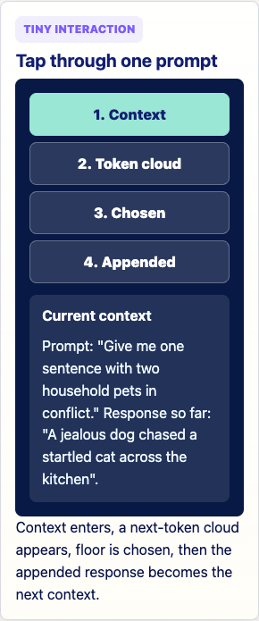
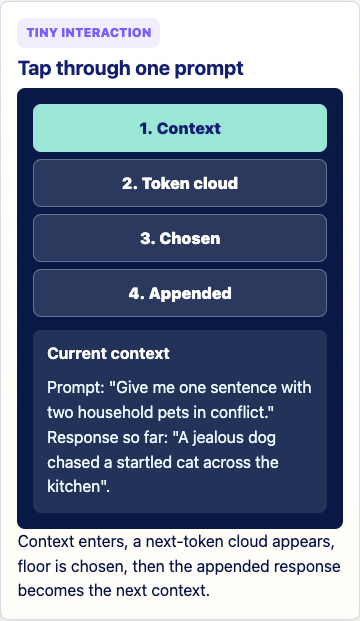
Stage: Before Morning
Interaction: Tap a branch tap-reveal P3
Action: Tap category branches in the AI family tree.
Completion: At least one branch explanation is revealed.
Feedback: Branch-specific one-sentence explanation.
Recommendation: Keep for human testing.
No P0/P1 issue found.
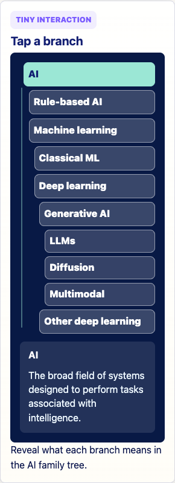
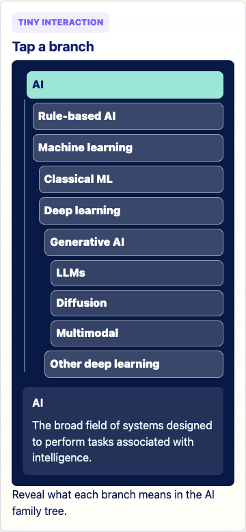
Stage: Before Morning
Interaction: Sort rules and patterns sort-buckets P3
Action: Classify rules, learned patterns, and hybrid ingredients.
Completion: All visible chips are assigned to buckets.
Feedback: Correctness highlighting plus summary insight.
Recommendation: Keep for human testing.
No P0/P1 issue found.
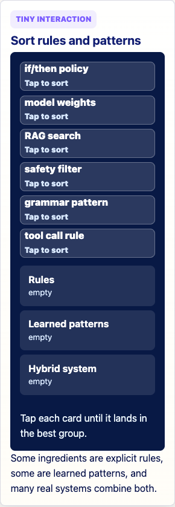
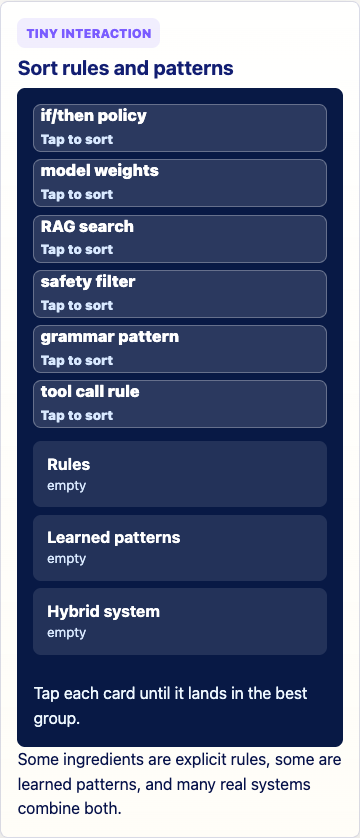
Stage: Before Morning
Interaction: Tap through the training loop tap-step P3
Action: Tap each step in the training loop.
Completion: Update weights step is selected or sequence is completed.
Feedback: Durable-update explanation.
Recommendation: Keep for human testing.
No P0/P1 issue found.
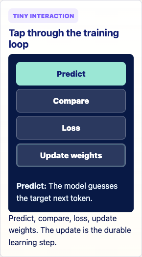
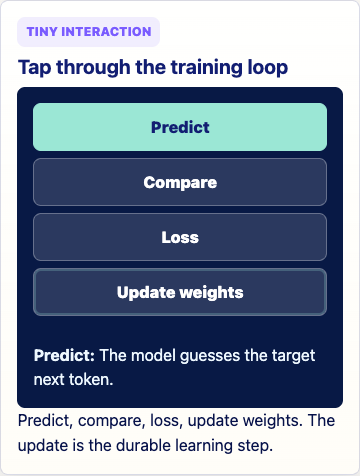
Stage: Before Morning
Interaction: Pattern learning or recall? toggle-choice P3
Action: Toggle between broad pattern learning and perfect recall.
Completion: Broad pattern learning state is selected.
Feedback: Boundary feedback against perfect-memory myth.
Recommendation: Keep for human testing.
No P0/P1 issue found.
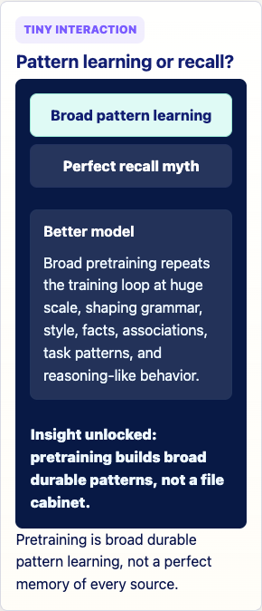
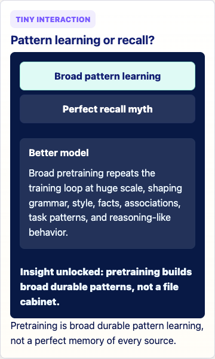
Stage: Before Morning
Interaction: Choose the better curve tap-choice P3
Action: Choose the curve that generalizes better.
Completion: Generalizing curve is selected.
Feedback: Validation-example feedback.
Recommendation: Keep for human testing.
No P0/P1 issue found.
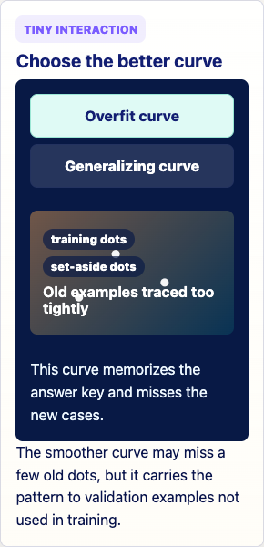
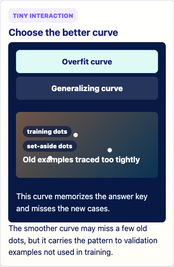
Stage: Before Morning
Interaction: Sort the steering moves sort-buckets P3
Action: Sort durable training, temporary context, and decoding moves.
Completion: Each steering move is assigned.
Feedback: Bucket-specific correction.
Recommendation: Keep for human testing.
No P0/P1 issue found.
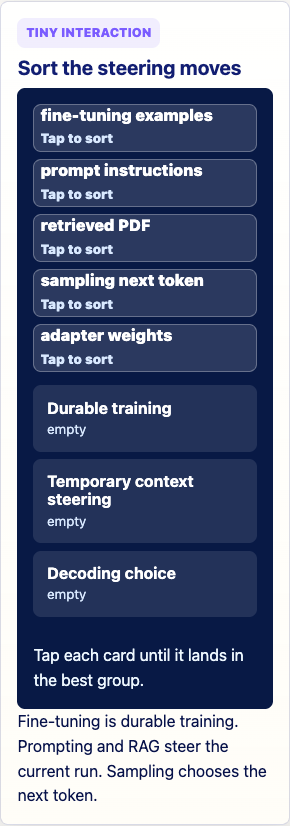
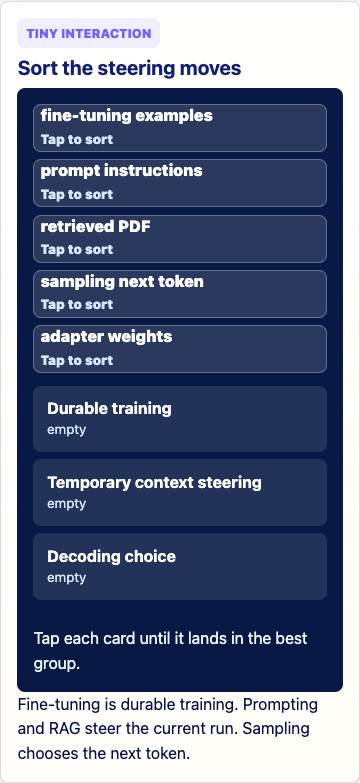
Stage: Before Morning
Interaction: Group the alignment methods sort-buckets P3
Action: Group alignment methods by durable shaping, runtime steering, and evaluation.
Completion: Each method is assigned.
Feedback: Method-group summary.
Recommendation: Keep for human testing.
No P0/P1 issue found.
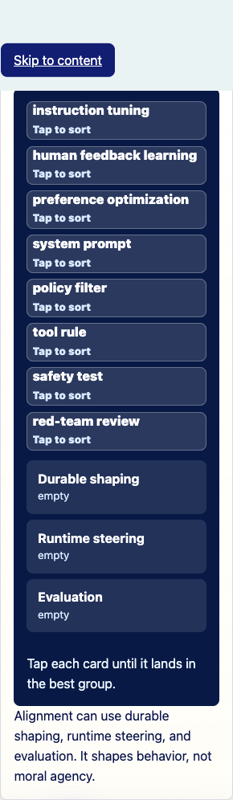
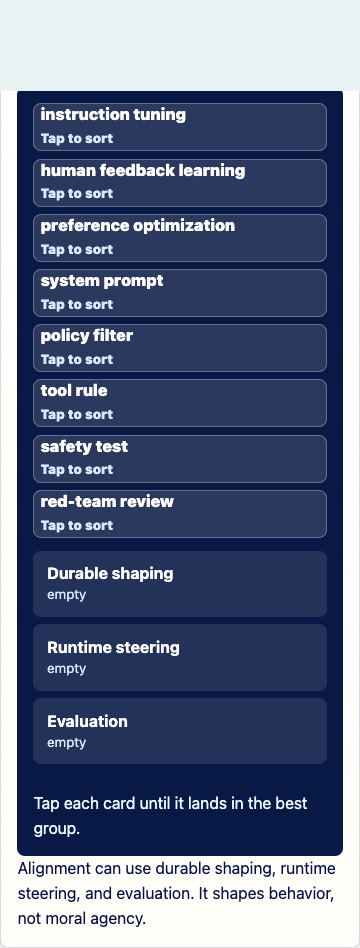
Stage: Morning Commute
Interaction: Walk the forward pass tap-step P3
Action: Walk the forward pass from context to next token.
Completion: Forward-pass path is completed.
Feedback: Temporary-versus-durable feedback.
Recommendation: Keep for human testing.
No P0/P1 issue found.
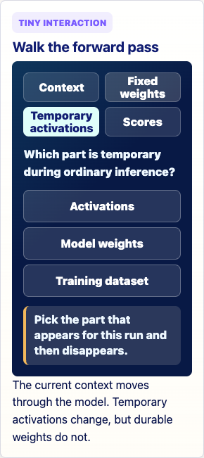
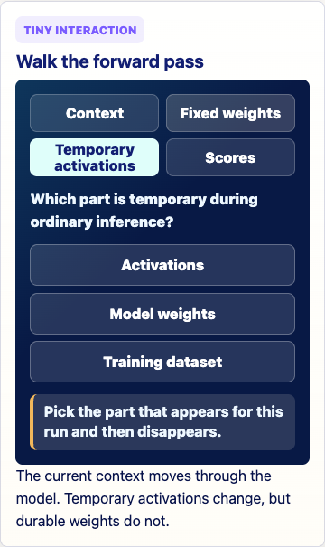
Stage: Morning Commute
Interaction: Label the context pieces label-pieces P3
Action: Tap rows that separate prompt, response so far, next token, and updated context.
Completion: All four rows can be inspected.
Feedback: Row-specific explanation.
Recommendation: Keep for human testing.
No P0/P1 issue found.
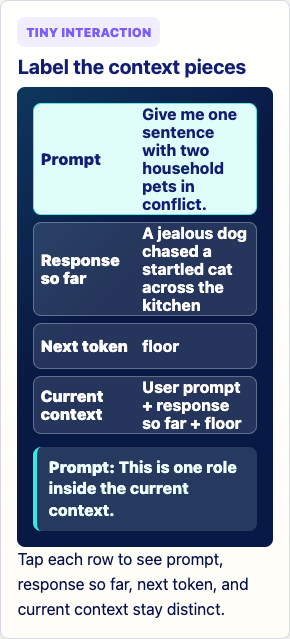
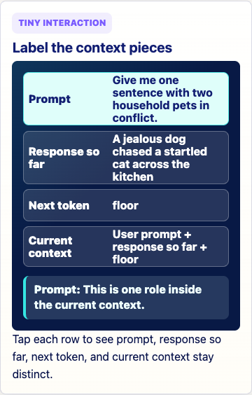
Stage: Morning Commute
Interaction: Split the sentence tap-reveal P3
Action: Reveal token cards and uneven chunks.
Completion: Uneven examples are shown.
Feedback: Token boundary feedback.
Recommendation: Keep for human testing.
No P0/P1 issue found.
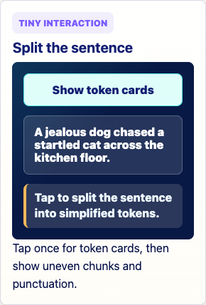
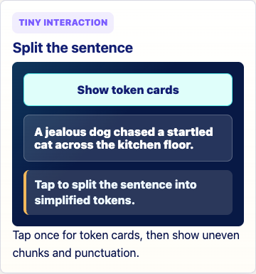
Stage: Morning Commute
Interaction: Match token to ID match-lookup P3
Action: Match token text to token IDs and table rows.
Completion: Lookup relationship is revealed.
Feedback: ID-is-not-meaning feedback.
Recommendation: Keep for human testing.
No P0/P1 issue found.
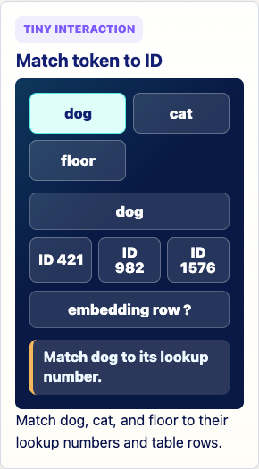
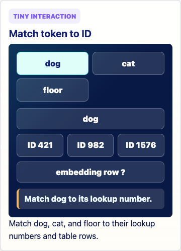
Stage: Morning Commute
Interaction: Look up a starting vector tap-lookup P3
Action: Tap a token ID to retrieve its embedding row.
Completion: Embedding row is shown.
Feedback: Durable embedding versus temporary hidden-state feedback.
Recommendation: Keep for human testing.
No P0/P1 issue found.
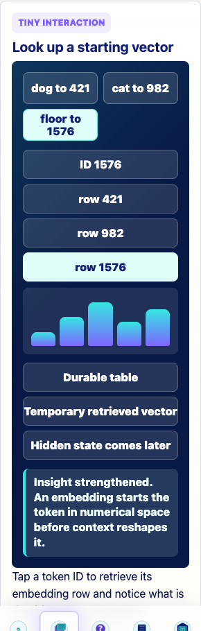
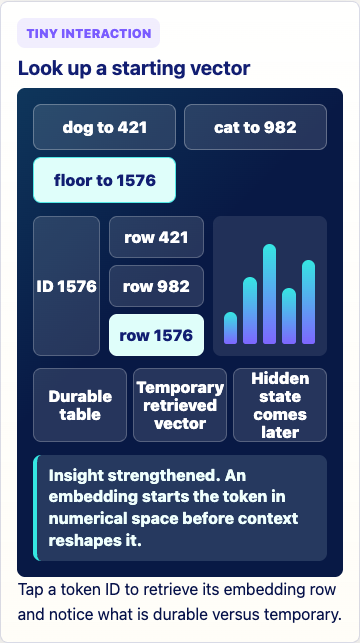
Stage: Morning Commute
Interaction: Toggle vector views toggle-view P2
Action: Switch between teaching sliders and distributed feature bars.
Completion: Distributed view is shown.
Feedback: Dimension-label limit feedback.
Recommendation: Keep for human testing; watch for clarity and replay value.
No P0/P1 issue found.
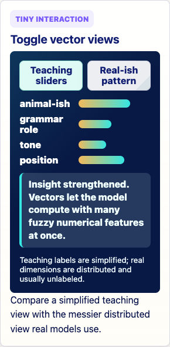
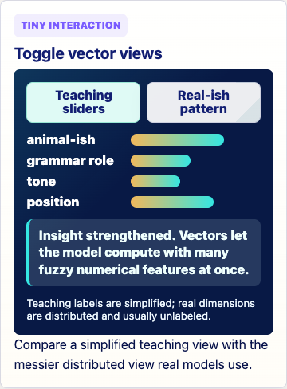
Stage: Morning Commute
Interaction: Inspect the axes tap-axis P2
Action: Inspect token axis, feature axis, and batch sheet.
Completion: All axis notes can be viewed.
Feedback: Axis-specific explanation.
Recommendation: Keep for human testing; watch for clarity and replay value.
No P0/P1 issue found.
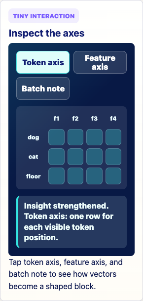
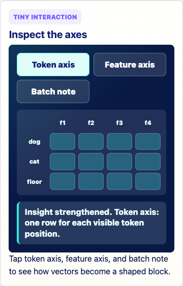
Stage: Workday
Interaction: Connect the pronoun connect-nodes P3
Action: Connect pronoun token to the most relevant source token.
Completion: A source token is selected.
Feedback: Relevance-not-awareness feedback.
Recommendation: Keep for human testing.
No P0/P1 issue found.
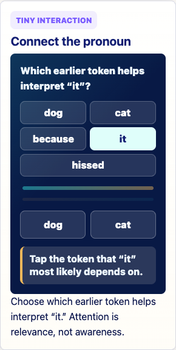
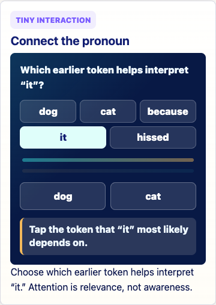
Stage: Workday
Interaction: Before and after MLP toggle-view P3
Action: Toggle same token before and after MLP.
Completion: After-MLP state is shown.
Feedback: Feature reshaping feedback.
Recommendation: Keep for human testing.
No P0/P1 issue found.
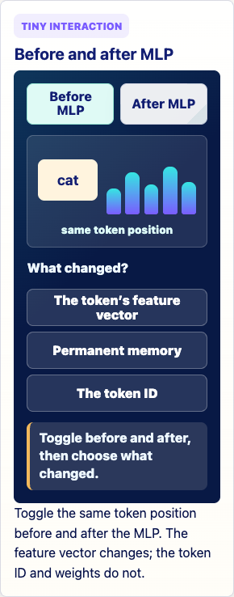
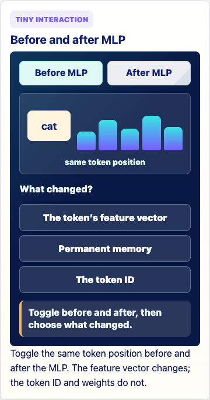
Stage: Workday
Interaction: Inspect the stack tap-step P3
Action: Tap layers in a transformer stack.
Completion: A layer detail is shown.
Feedback: Repeated numerical transformation feedback.
Recommendation: Keep for human testing.
No P0/P1 issue found.
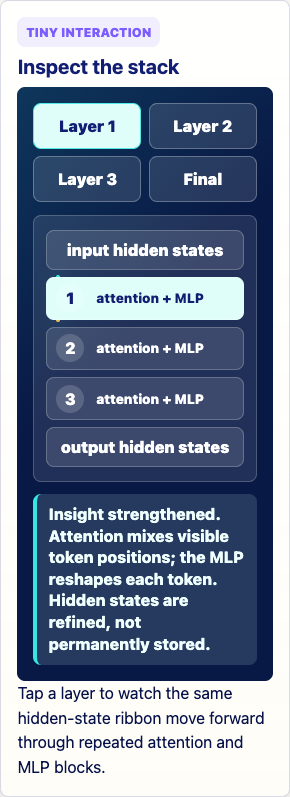
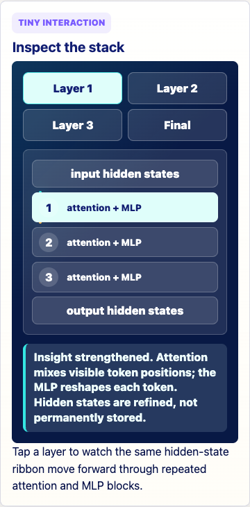
Stage: Workday
Interaction: Durable or temporary? sort-buckets P3
Action: Sort durable, temporary, and outside-forward-pass items.
Completion: Each item is assigned.
Feedback: Temporary hidden-state feedback.
Recommendation: Keep for human testing.
No P0/P1 issue found.
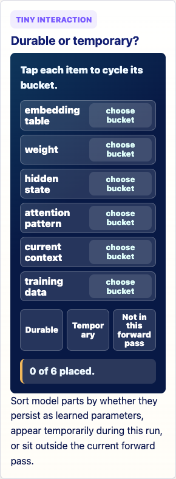
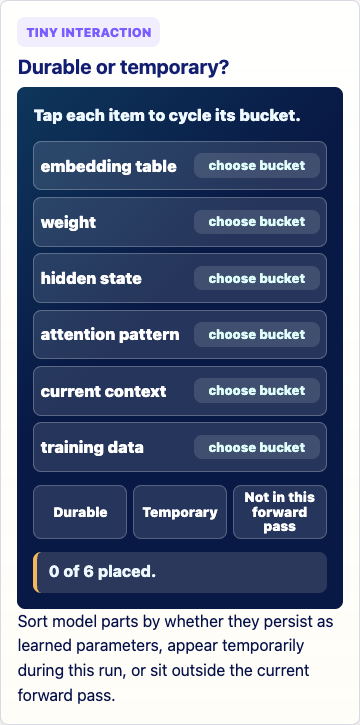
Stage: Decision Room
Interaction: Raw scores or probabilities? toggle-view P3
Action: Toggle raw scores and probability-ready framing.
Completion: Raw-score state is visible.
Feedback: Logits-are-not-probabilities feedback.
Recommendation: Keep for human testing.
No P0/P1 issue found.
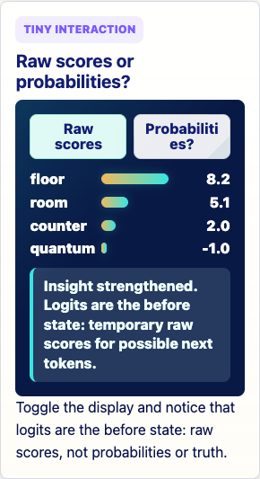
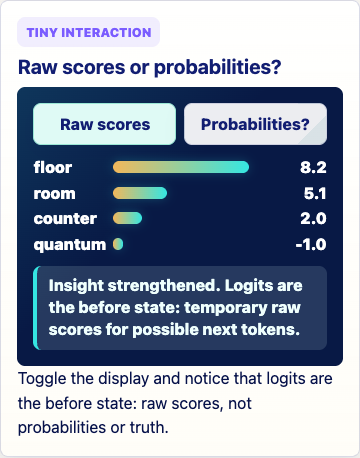
Stage: Decision Room
Interaction: Convert the scores tap-transform P3
Action: Convert raw scores into probabilities.
Completion: Softmax conversion is shown.
Feedback: Probability-not-truth feedback.
Recommendation: Keep for human testing.
No P0/P1 issue found.
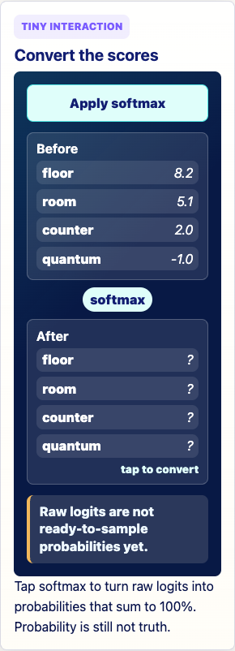
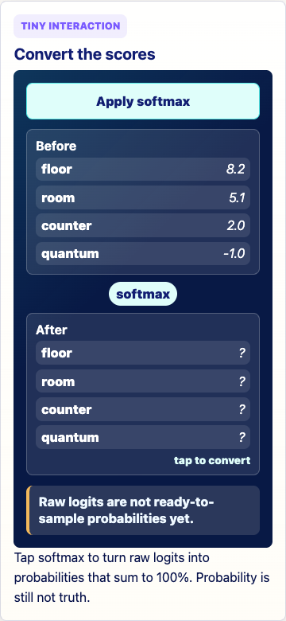
Stage: Decision Room
Interaction: Choose from the probability cloud tap-choice P3
Action: Choose a next token from probability-shaped candidates.
Completion: A candidate token is selected.
Feedback: Sampling uncertainty feedback.
Recommendation: Keep for human testing.
No P0/P1 issue found.
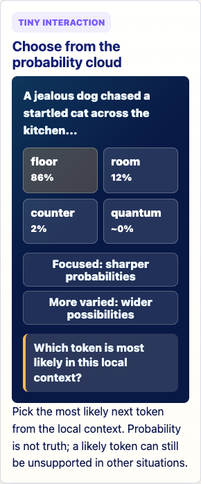
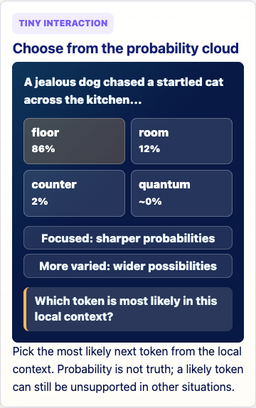
Stage: The Day Repeats
Interaction: Tap-step append loop tap-step P3
Action: Step through choose, append, run again.
Completion: Loop reaches the repeated run state.
Feedback: Append-and-repeat feedback.
Recommendation: Keep for human testing.
No P0/P1 issue found.
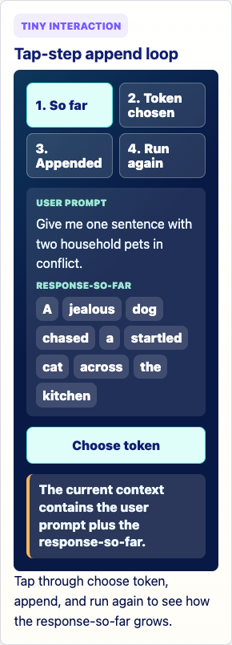
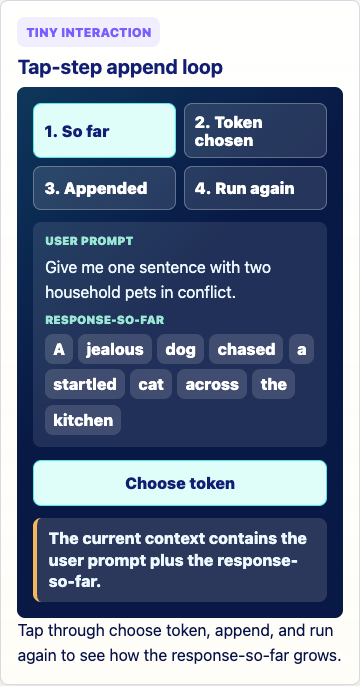
Stage: The Day Repeats
Interaction: Push the context cards tap-stack P3
Action: Push cards into a bounded context tray.
Completion: A card falls out after the window fills.
Feedback: Temporary-window feedback.
Recommendation: Keep for human testing.
No P0/P1 issue found.
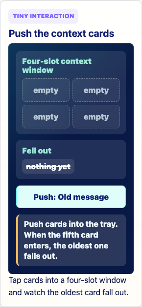
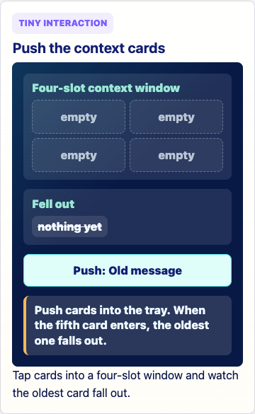
Stage: The Day Repeats
Interaction: Trace the retrieval lanes tap-step P3
Action: Trace prompt, retriever, retrieved notes, context tray, and response.
Completion: All retrieval lanes can be highlighted.
Feedback: Retrieval-plus-context feedback.
Recommendation: Keep for human testing.
No P0/P1 issue found.
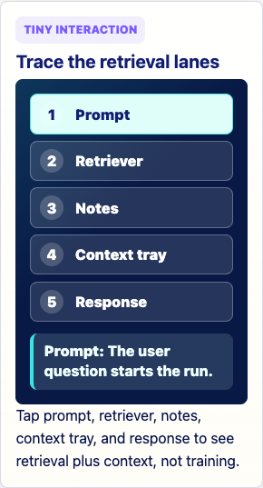
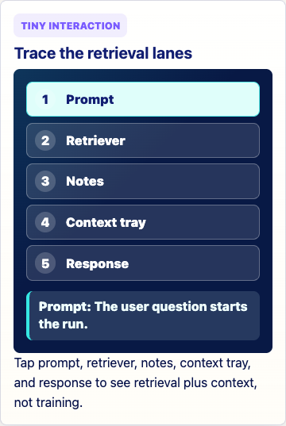
Stage: The Day Repeats
Interaction: Match claims to evidence connect-nodes P3
Action: Connect claims to supporting evidence.
Completion: Supported and unsupported claims are visible.
Feedback: Evidence-match feedback.
Recommendation: Keep for human testing.
No P0/P1 issue found.
Stage: The Day Repeats
Interaction: Mark missing supports tap-multiple P3
Action: Mark fluent claims that need evidence.
Completion: Unsupported claims are marked.
Feedback: Unsupported-output feedback.
Recommendation: Keep for human testing.
No P0/P1 issue found.
Stage: Twilight: The Wider Landscape
Interaction: Sort the learning modes sort-buckets P3
Action: Sort durable update, temporary steering, retrieval, and evaluation modes.
Completion: Each mode is assigned.
Feedback: What-changed feedback.
Recommendation: Keep for human testing.
No P0/P1 issue found.
Stage: Twilight: The Wider Landscape
Interaction: Step through two loops tap-compare P3
Action: Step through token append path and denoise path.
Completion: Both paths can be compared.
Feedback: Autoregression-versus-diffusion feedback.
Recommendation: Keep for human testing.
No P0/P1 issue found.
Stage: Twilight: The Wider Landscape
Interaction: Match media lanes match-lanes P3
Action: Match media inputs and outputs.
Completion: A media lane pair is selected.
Feedback: Representation-not-human-senses feedback.
Recommendation: Keep for human testing.
No P0/P1 issue found.
Stage: Twilight: The Wider Landscape
Interaction: Tap storm ingredients tap-reveal P3
Action: Tap converging ingredient streams.
Completion: Ingredient explanation is revealed.
Feedback: Convergence-not-spark feedback.
Recommendation: Keep for human testing.
No P0/P1 issue found.
Stage: Midnight Ledger
Interaction: Which questions stay human? sort-buckets P2
Action: Sort human-rights questions away from model mechanics.
Completion: Questions are classified.
Feedback: Accountability feedback.
Recommendation: Keep for human testing; watch for clarity and replay value.
No P0/P1 issue found.
Stage: Midnight Ledger
Interaction: Tap the cost ledger tap-reveal P3
Action: Tap cost ledger entries.
Completion: Cost category explanation is revealed.
Feedback: Countable-cost feedback.
Recommendation: Keep for human testing.
No P0/P1 issue found.
Stage: Midnight Ledger
Interaction: Sort risk from myth sort-buckets P3
Action: Sort practical risks from myths.
Completion: Claims are assigned.
Feedback: Mechanism-risk feedback.
Recommendation: Keep for human testing.
No P0/P1 issue found.
Stage: New Dawn
Interaction: Sort benefit strength sort-buckets P2
Action: Sort benefit claims by evidence strength.
Completion: Claims are assigned.
Feedback: Bounded-benefit feedback.
Recommendation: Keep for human testing; watch for clarity and replay value.
No P0/P1 issue found.
Stage: New Dawn
Interaction: Center the human purpose tap-choice P3
Action: Choose the more human-centered deployment.
Completion: Accountable deployment is selected.
Feedback: Review-and-accountability feedback.
Recommendation: Keep for human testing.
No P0/P1 issue found.
Stage: New Dawn
Interaction: Choose the better path tap-multiple P3
Action: Choose design and governance levers.
Completion: Useful levers are selected.
Feedback: Design-choice feedback.
Recommendation: Keep for human testing.
No P0/P1 issue found.
Stage: New Dawn
Interaction: Pack the context tray tap-multiple P3
Action: Pack a context tray with prompt ingredients.
Completion: Prompt tray is completed.
Feedback: Context-design feedback.
Recommendation: Keep for human testing.
No P0/P1 issue found.
Stage: New Dawn
Interaction: Light the map order-sequence P2
Action: Put the model-literacy chain in order.
Completion: All chain steps are ordered.
Feedback: Mechanics-to-accountability feedback.
Recommendation: Keep for human testing; watch for clarity and replay value.
No P0/P1 issue found.